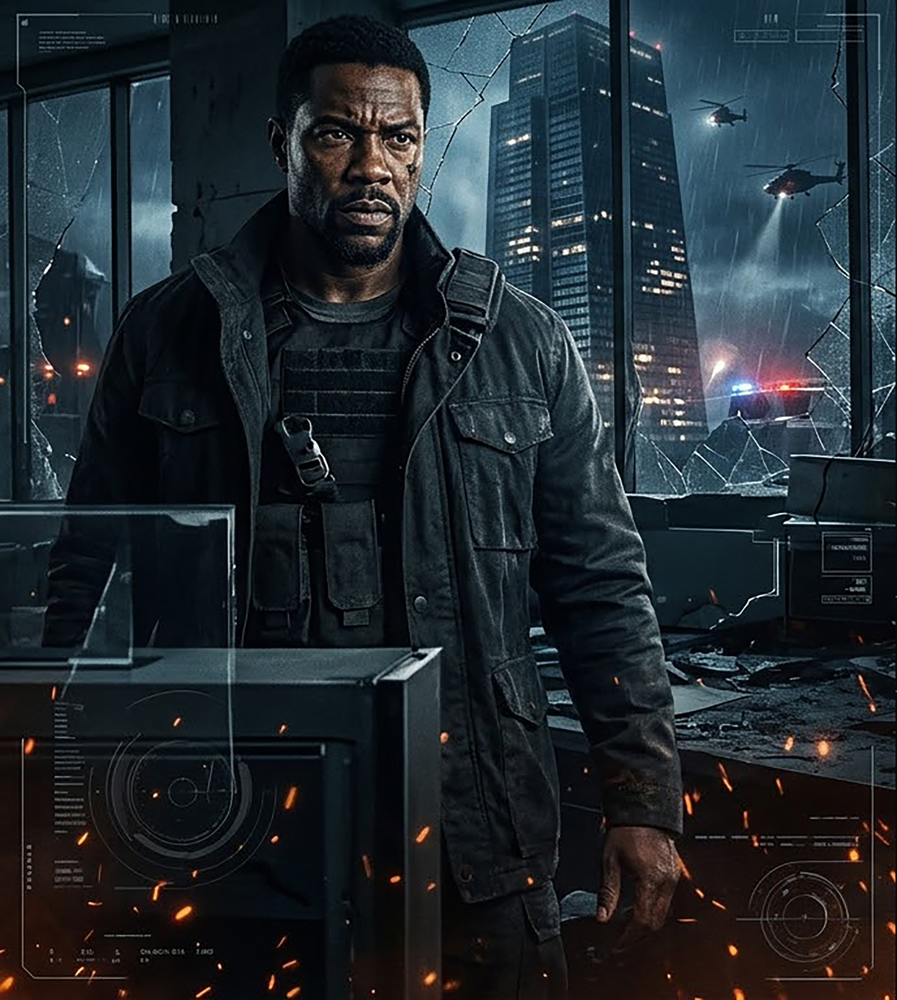

Elevation Code

When an elite hostage negotiator's family is captured inside a fortified skyscraper
by an off-grid mercenary syndicate, he must fight his way down eighty floors using
only the building's automated security systems to neutralize them before sunrise.
"Die Hard" meets "The Raid", with the tactical tension of "Sicario"
High-Concept Action / Survival Thriller
Gritty, visceral, propulsive
Target Audience
Core male 18-35, broad global action audience (strong international appeal)
In a cinematic landscape crowded with fantasy, this film delivers grounded, high-
stakes action with a uniquely strategic protagonist who must weaponize a smart
skyscraper to save his daughter.
It's a ticking-clock spectacle that will grip audiences from the first floor to the
ground
Key Roles
MARCUS VANCE (30s-40s): Lead. Calm under pressure, surgically precise, but
emotionally exhausted. Not a brawler - a strategic operator who weaponizes terrain.
ELENA ROZAN (40s): Antagonist. Cold, disciplined ex-private security commander.
She doesn't want chaos; she wants leverage, making her utterly unpredictable.
SARAH VANCE (16): Marcus's daughter. Resourceful, refuses to play the passive
victim, and provides critical insider support via the skyscraper's radio network.
Synopsis
Marcus attends a private corporate gala to reconcile with his estranged daughter.
At midnight, Rozan's unit cuts communications, jams elevator shafts, and secures
the building. Marcus slips through the dragnet into the maintenance core. Hunted
floor-by-floor, Marcus manipulates the skyscraper's smart-building overrides fire
suppression halon gas, HVAC venting, blackout zones - turning the corporate tower
into an asymmetric combat arena. Out of floors and ammunition, Marcus corners
Rozan during an aerial extraction on the helipad in a blinding storm, forcing a
hand-to-hand fight with zero margin for error.